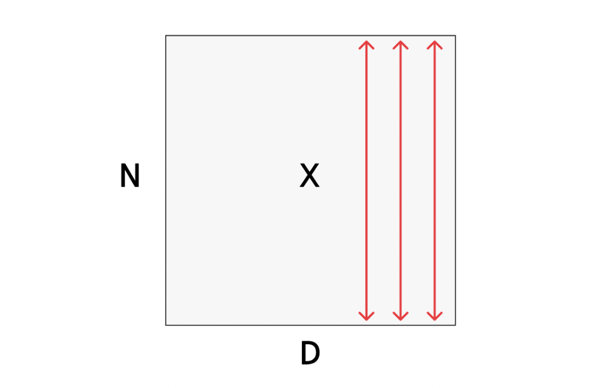
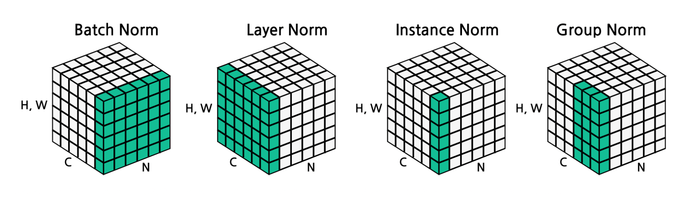

1. Introduction: 정규화(Normalization)의 필요성
깊은 신경망을 학습시킬 때, 이전 계층의 가중치가 업데이트됨에 따라 다음 계층으로 전달되는 입력 데이터의 분포가 지속적으로 변화하는 현상이 발생합니다. 이를 내부 공변량 변화(Internal Covariate Shift)라고 부르며, 오랫동안 학습을 불안정하게 만드는 주요 원인으로 여겨져 왔습니다. 최근의 현대적 관점에서는 정규화가 학습을 돕는 주된 이유를 손실 함수의 최적화 지형(Optimization landscape)을 더 부드럽게(smoother) 만들어주기 때문으로 해석합니다.
이러한 문제를 해결하기 위한 핵심 아이디어가 바로 배치 정규화(Batch Normalization)입니다. 계층의 출력값을 정규화하여 평균을 0으로, 분산을 1로 맞추는 것이 그 목적입니다.
2. Batch Normalization (배치 정규화)의 수학적 공식

정규화는 미분 가능한 함수이므로 신경망 내의 연산자로 삽입하여 역전파(Backpropagation)를 수행할 수 있습니다. 입력 데이터 \(x \in \mathbb{R}^{N \times D}\) (\(N\)은 배치 크기, \(D\)는 데이터의 차원)가 주어졌을 때의 정규화 과정은 다음과 같습니다.
- 미니 배치 평균(Per-channel mean) 계산: \[\mu_j = \frac{1}{N} \sum_{i=1}^N x_{i,j}\]
- 채널(차원) \(j\)마다 \(N\)개의 배치 데이터의 평균 \(\mu \in \mathbb{R}^D\)를 구합니다.
- 미니 배치 분산(Per-channel variance) 계산: \[\sigma_j^2 = \frac{1}{N} \sum_{i=1}^N (x_{i,j} - \mu_j)^2\]
- 채널별 분산 \(\sigma^2 \in \mathbb{R}^D\)을 구합니다.
- 정규화(Normalization): \[\hat{x}_{i,j} = \frac{x_{i,j} - \mu_j}{\sqrt{\sigma_j^2 + \epsilon}}\]
- 평균을 빼고 표준편차로 나누어 정규화된 \(\hat{x} \in \mathbb{R}^{N \times D}\)를 얻습니다 (0으로 나누는 것을 방지하기 위해 아주 작은 값 \(\epsilon\)을 더합니다).
2.1. 표현력의 한계와 Learnable Parameters
단순히 평균을 0, 분산을 1로 강제하는 것은 신경망의 표현력을 지나치게 제한(restrictive)할 수 있다는 문제가 있습니다. 만약 특정 층에서 비선형 활성화 함수(예: Sigmoid)를 통과하기 전에 데이터가 0을 중심으로만 모여있다면, 선형적인 구간에만 데이터가 갇히게 됩니다.
이를 해결하기 위해 모델이 스스로 정규화의 형태를 복구하거나 조절할 수 있도록 학습 가능한 스케일(Scale) 변수 \(\gamma\)와 이동(Shift) 변수 \(\beta\)를 도입합니다.
\[y_{i,j} = \gamma_j \hat{x}_{i,j} + \beta_j\]
- 여기서 최종 출력 \(y \in \mathbb{R}^{N \times D}\)가 됩니다.
- 만약 모델이 학습 과정에서 원래의 데이터 분포가 더 유용하다고 판단하면, \(\gamma = \sigma\), \(\beta = \mu\)로 학습하여 기댓값 측면에서 본래의 항등 함수(Identity function)를 완벽히 복원해 낼 수도 있습니다.
3. Train 단계와 Test 단계의 차이
배치 정규화의 가장 큰 특징이자 잠재적인 버그의 원인은 학습(Training)과 테스트(Testing) 시의 동작 방식이 다르다는 점입니다.
Training Time: 평균 \(\mu\)와 분산 \(\sigma^2\)의 추정치가 입력된 미니 배치(Mini-batch)에 철저히 의존합니다. 학습하는 동안, 모델은 전체 데이터셋의 평균적인 분포를 파악하기 위해 미니 배치의 평균과 표준편차에 대한 이동 평균(Running averages)을 지속적으로 계산하여 저장해 둡니다.
Test Time: 테스트 시점에서는 미니 배치의 통계량을 계산할 수 없거나 무의미하므로(예: 1장의 이미지만 추론할 때), 학습 단계에서 미리 구해둔 이동 평균 \(\tilde{\mu}_j\)와 \(\tilde{\sigma}_j^2\)를 고정된 값으로 사용합니다.
\[\text{Input: } \hat{x}_{i,j} = \frac{x_{i,j} - \tilde{\mu}_j}{\sqrt{\tilde{\sigma}_j^2 + \epsilon}}\] \[\text{Output: } y_{i,j} = \gamma_j \hat{x}_{i,j} + \beta_j\]
- Test 과정에서는 연산이 단순히 상수와의 선형 변환으로 취급되므로, 추가적인 오버헤드(Overhead) 없이 완전 연결 계층(FC)이나 합성곱(Conv) 계층의 가중치에 병합(fused)할 수 있습니다.
4. FC 계층과 Conv 계층에서의 배치 정규화

데이터의 차원에 따라 배치 정규화가 적용되는 축(Axis)이 다릅니다.
- Fully-Connected Networks:
- 입력 \(x\)가 \(N \times D\)일 때, \(\mu, \sigma, \gamma, \beta\)는 각각 크기가 \(1 \times D\)입니다. 즉, 각 특성(Feature) 차원마다 정규화를 수행합니다.
- Convolutional Networks (Spatial BatchNorm, BatchNorm2D):
- 입력 \(x\)가 \(N \times C \times H \times W\) (배치 \(\times\) 채널 \(\times\) 높이 \(\times\) 너비) 형태를 가집니다.
- 이 경우 공간적인 정보(H, W)를 유지하면서 채널(C)별로 정규화해야 합니다. 따라서 평균과 분산은 \(N, H, W\) 전체에 대해 계산되며, \(\mu, \sigma, \gamma, \beta\)의 차원은 \(1 \times C \times 1 \times 1\)이 됩니다.
[삽입 위치] 배치 정규화 계층은 일반적으로 Fully-Connected 계층이나 Convolutional 계층 바로 뒤, 그리고 비선형 활성화 함수(tanh, ReLU 등) 바로 앞에 삽입됩니다 (FC -> BN -> tanh).
5. 다양한 정규화 기법들 (LN, IN, GN)
배치 정규화는 강력하지만 미니 배치 크기에 의존한다는 단점이 있습니다. 데이터 텐서 \(N \times C \times H \times W\)를 어떤 축을 기준으로 묶어서 평균과 분산을 구하느냐에 따라 다양한 정규화 기법이 존재합니다.
- Batch Normalization (배치 정규화):
- 기준: \(N, H, W\)를 묶어서 채널 \(C\)마다 평균/분산을 구합니다 (\(\mu, \sigma \in \mathbb{R}^C\)).
- CNN 계열에서 가장 좋은 성능을 발휘합니다.
- Layer Normalization (계층 정규화):
- 기준: \(C, H, W\)를 묶어서 배치 샘플 \(N\)마다 독립적으로 평균/분산을 구합니다 (\(\mu, \sigma \in \mathbb{R}^N\)).
- 장점: 학습 시 배치 크기(Batch size)에 전혀 영향을 받지 않습니다.
- 사용처: RNN이나 Transformer와 같은 시퀀스(Sequence) 모델에서 주로 사용됩니다.
- Instance Normalization (인스턴스 정규화):
- 기준: \(H, W\)만을 묶어서, 각 샘플 \(N\)과 채널 \(C\)마다 따로따로 평균/분산을 구합니다 (\(\mu, \sigma \in \mathbb{R}^{N \times C}\)).
- 장점: Batch Norm보다 훨씬 세밀한(Finer) 정규화가 가능하며 배치 크기에 독립적입니다.
- 사용처: Style Transfer(스타일 변환)나 생성 모델(Generative models)에 널리 쓰입니다.
- Group Normalization (그룹 정규화):
- 기준: 채널 \(C\)를 여러 개의 그룹으로 나누어 정규화를 수행합니다. 인스턴스 정규화를 일반화한 형태입니다.
6. Summary: CNN 컴포넌트 총정리 및 BN의 장단점
지금까지 학습한 합성곱 신경망(Convolutional Network)의 전체 파이프라인 컴포넌트는 다음과 같이 요약됩니다.
- Convolution Layers: 입력 이미지에서 특징 추출 (공간 정보 유지)
- Pooling Layers: 공간적 차원(H, W)을 다운샘플링하여 연산량 감소 및 불변성 확보
- Normalization: \(\hat{x}_{i,j} = \frac{x_{i,j} - \mu_j}{\sqrt{\sigma_j^2 + \epsilon}}\) 공식을 통해 값의 분포를 안정화
- Activation Function: 비선형성(ReLU 등) 부여
- Fully-Connected Layers: 추출된 특징을 기반으로 최종 클래스 스코어 도출
배치 정규화(BN)가 제공하는 이점과 한계는 명확합니다.
- Pros (장점):
- 깊은 신경망의 학습을 훨씬 쉽게(easier to train) 만들어 줍니다.
- 더 높은 학습률(Learning rate)을 사용할 수 있어 수렴 속도가 빨라집니다.
- 가중치 초기화(Initialization) 상태에 덜 민감해져 강건해(robust)집니다.
- 학습 중 규제(Regularization) 효과를 일부 제공합니다.
- Cons (단점):
- 왜 잘 작동하는지 아직 이론적으로 완벽히 이해되지 않았습니다.
- 학습(Train)과 추론(Test) 시의 동작 원리가 달라 잦은 버그의 원인이 됩니다.